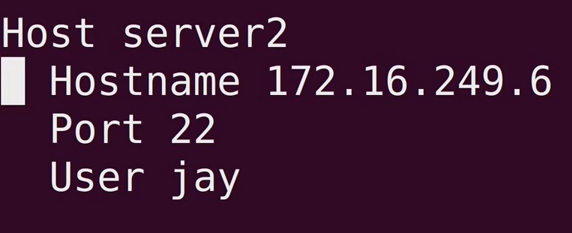

a secure shell connection
sshd- daemon - server part
syntex:
ssh -p2222 fd@pwnable.kr - port <user> @ <domain>
- commands
service ssh start start the ssh service
service ssh stop stop the ssh service
service ssh status check the status of the ssh service
systemctl restart ssh.service
ctrl+d log out
every time a new ssh connection is made, it may be added to known_hosts file in the root/.sshdir
each server has a uniqe fingerprint (session faking? hijacking?)
"config" file can be created in root/.ssh folder, its also where the known_hosts file is, allows to set up entries to frequently used servers

config file for our server / client info is at - etc/ssh
in order to allow root login, change PermitRootLogin to yesand remove comment:

ssh can be set to use keys, in that case, the key is kept on the machine and no PW authentication is required.
if no key is present, PW will be required. a security approach is to disable PW auth and allow only key auth, preventing attacks.
in order to create ssh key use binary ssh-keygen, is will generate a key and will ask for path and passphrase, the passphrase is local to the client and is to allow the use of the key.
a private and public keys will be generated, the public is verified against the public key.
troubleshooting - tracert is usefull, figuring out where the connection failed